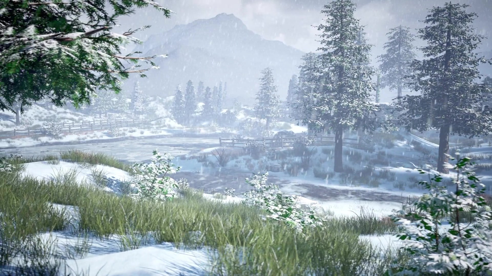
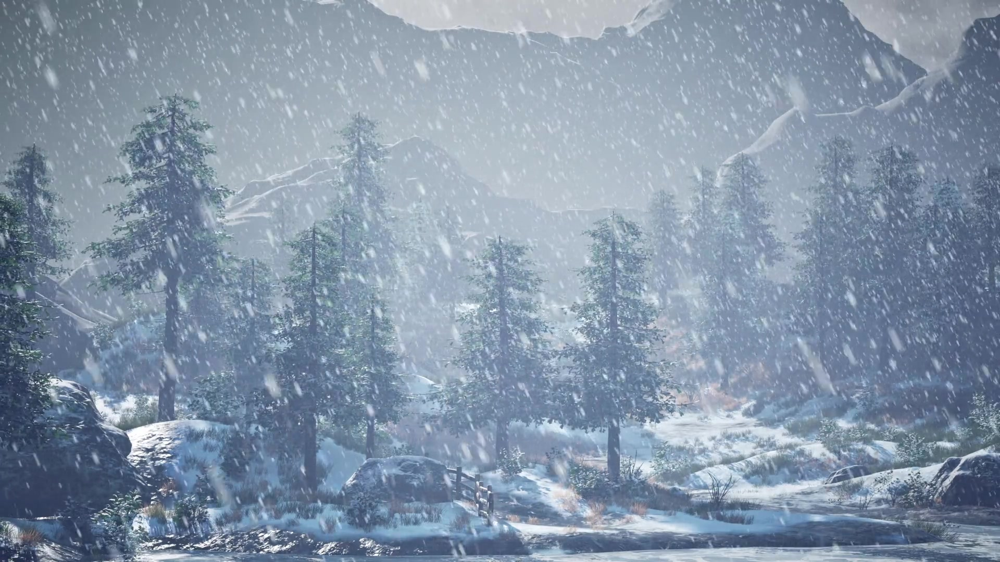

Shape the daylight
I balanced a luminous sky and snow-covered ground against darker vegetation and rock. The resulting value structure keeps the image bright while preserving depth and visual direction.
05 / ENVIRONMENT LIGHTING
A winter landscape shaped through daylight, atmospheric depth, snowfall and a cinematic final grade.
Individual environment lighting study
/ BREAKDOWN
The breakdown opens the project with the visual transformation as snow, weather and the finished lighting treatment are introduced.
/ OVERVIEW
This project explores how lighting can turn a broad mountain environment into a readable cinematic image. The challenge was to preserve detail in the snow and sky while maintaining enough contrast to separate the foreground, frozen valley and distant peaks.
I used a cool daylight palette as the foundation, then shaped the image through value, shadow and atmospheric falloff. Dark trees and fencing frame the scene, brighter snow leads the eye through the landscape, and haze softens the background to reinforce scale.
I balanced a luminous sky and snow-covered ground against darker vegetation and rock. The resulting value structure keeps the image bright while preserving depth and visual direction.
Falling snow and aerial haze soften the mountain layers and add weather to the frame. Stronger contrast in the foreground keeps the environment grounded.
In DaVinci Resolve I refined the overall balance, protected the brightest areas and unified the blue-white palette while retaining subtle natural colour in the vegetation and wood.

Foreground foliage, the frozen valley and softened mountains create three clear planes within the environment.

The denser snowfall changes contrast and visibility, shifting attention toward the nearer trees and terrain.
/ SHOT STUDIES
These additional views show how the lighting, weather and composition behave across different camera positions.
A closer composition using vegetation and branches as a dark frame around the brighter snowfield and water.
A weather variation where denser particles and softer background contrast create a more enclosed atmosphere.
/ FINAL SEQUENCE
The moving camera reveals the finished lighting across the road, frozen water, tree line and distant mountains.
The completed 20-second shot, rendered in Unreal Engine and colour-corrected in DaVinci Resolve.
Environment lighting, look development, cinematic camera and final colour correction: Joshua Medina.
Lighting and rendering completed in Unreal Engine. Final colour correction completed in DaVinci Resolve.